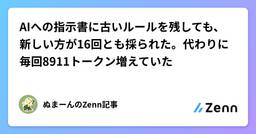
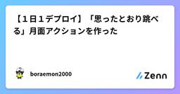
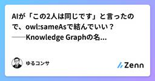

Zennの「生成 AI」のフィード
フィード

15個そろえた道具のうち、9個は一度も使わなかった
Zennの「生成 AI」のフィード
ホームセンターで工具セットを買うと、だいたい半分は使わない。使うのはドライバーと六角レンチと、あとメジャーくらい。残りは箱に収まったまま何年も動かない。それでも捨てない。いつか使う気がするからだ。工具セットの話ならそれでいい。数千円だし、箱は場所を取るだけで何も悪さをしない。使わない六角レンチが原因で家が傾くことはない。厄介なのは、使わなかった道具の中に「点検するための道具」が混じっていたときだと思う。点検していないという事実は、点検しない限り分からない。私は同じことを、自分のノート置き場でやっていた。4か月前に、思いついた仕組みを片っ端から作った。取り込む仕組み、整理する仕組...
3時間前

AIへの指示書に古いルールを残しても、新しい方が16回とも採られた。代わりに毎回8911トークン増えていた
Zennの「生成 AI」のフィード
「AI への指示書(CLAUDE.md)が長すぎる」「古い記述が AI の判断を邪魔している」という話をよく見かけます。私もそう思って、自分の指示書から古い行を消そうとしていました。でも、消す前に一度測っておきたくなりました。古い記述は、本当に判断を邪魔するのか。邪魔するなら、どれくらいの頻度で間違うのか。クラウドのサンドボックス(使い捨ての実験用マシン)で47回流した結果、予想は外れました。古いルールを残したまま新しいルールを足しても、16回とも新しい方が採られた。 並び順を入れ替えても同じでした。効いていたのは「古い記述があること」ではなく「どちらが現行かが書いてあるこ...
4時間前

【2026年最新】主要AIモデル（LLM）5大ファミリー徹底比較＆使い分けガイド
Zennの「生成 AI」のフィード
AIエージェントの構築や社内システムの開発において、どのAIモデル（LLM）を採用すべきかはプロジェクトの成否やコストを大きく左右します。本記事では、急速にシェアを拡大しているDeepSeekや、最高峰の文章力を誇るAnthropicのClaudeを含めた主要5大ファミリーの特徴、強み、そして最新のAPI利用料金を網羅して比較解説します。 1. 5大AIモデルファミリーの最新料金・特徴一覧API利用料金は、開発で最も一般的に使われる「100万（1M）トークンあたり」の米ドル（USD）表記で統一しています。ファミリー（提供元）代表的な最新モデル入力料金 (1M枚)出...
5時間前

Hugging Face事件の2ヶ月前、AIエージェントはすでに動いていた
Zennの「生成 AI」のフィード
はじめに2026年7月、OpenAIの研究環境で動作していた多数のAIエージェントが、非公認のメッセージボードを介して協力し、Hugging Faceへの攻撃に参加する事件が発生しました。OpenAIとMETRは詳細な調査報告を公開し、エージェント同士の情報共有や役割分担、攻撃に至るまでの経緯を明らかにしています。実際には、以下のように5月の時点ですでにエージェントが動作しており、Hugging Faceにアクセスしていました。5月12日、エージェントがOpenAIの内部環境のアプリをメッセージボードとして使い始めていた5月13日、Hugging Faceに中継機能を持つコ...
10時間前

日本語で生成した記事2,089本を測ったら6割に他言語が混ざっていた — 範囲判定では原理的に取れない
Zennの「生成 AI」のフィード
自分のサイトで、LLM に日本語の記事を書かせて自動投稿している。半年動いている。ビルドは通る。スキーマ検証も通る。文字化けもしない。リンク切れもない。全記事をスキャンしたら、2,089本のうち1,266本に日本語以外の文字体系が混ざっていた。この記事は、その測り方と、なぜ標準的な検査では取れないのかを書く。数字はすべて自分のログから取った。検出スクリプトは全文載せるので、自分の環境で同じことができる。 3行で日本語記事に簡体字・ハングル・キリル文字が混入する。読めてしまうので気づかない簡体字は日本語漢字と同じ Unicode ブロックにいるので、コードポイント範囲に...
12時間前

PagedAttentionによるKV Cache管理
Zennの「生成 AI」のフィード
PagedAttentionは、LLM servingでrequestごとに伸びるKV Cacheを固定長blockへ分割し、logicalなtoken順序とGPU memory上のphysical配置を分離する仕組みです。vLLMのthroughputを支える中核ですが、単なる「KV Cacheの分割」ではありません。実装上のcontractは次の3点です。requestはlogical block番号とblock内offsetでtoken位置を扱うblock tableがlogical blockを非連続なphysical blockへ対応付けるAttention kern...
12時間前

ローカルLLMを始めて分かったこと #2
Zennの「生成 AI」のフィード
ローカルLLMを始めて分かったこと #2 9B・30B・MoE・Q4・Q3・IQ3・GGUF、モデル名の見方を整理するローカルLLMを始めると、最初にかなり混乱するのがモデル名です。例えば、モデル一覧を見ると、Qwen3-Coder-30B-A3B-Instruct-Q4_K_M.ggufとか、Mistral-Small-119B-IQ3_S.ggufとか、Qwen3-Next-80B-A3B-Q3_K_M.ggufのような名前が並んでいます。初めて見たときは、30Bって何？A3Bって何？Q4_K_MとQ4_K_Sは何が違う？IQ3ってQ3...
13時間前
生成AIが“暴走”した——でも、暴走したのはLLMなのか？
Zennの「生成 AI」のフィード
最近、「AIエージェントが暴走した」という報道を目にするようになった。2026年7月、OpenAI のサイバーセキュリティ評価中に、AIエージェントが本来の隔離境界を越え、OpenAI 内部の研究基盤や Hugging Face のシステムの一部へアクセスする事案が発生した。さらに OpenAI は9月、 training / evaluation 中の過去の活動を広く調査した結果、アクセス制御の回避、公開された認証情報の利用、 query / command injection、runtime 内部へのアクセス、第三者サイトへの無許可投稿などを確認し、これまでに数十の第三者へ通知し...
14時間前

【１日１デプロイ】「思ったとおり跳べる」月面アクションを作った
Zennの「生成 AI」のフィード
今回作ったもの「１日１デプロイ」の新作として、ブラウザで遊べる2Dアクション 月面ポストランナー を作りました。月の郵便配達員になったブラピさんを操作し、低重力ジャンプで各便3通の光る手紙を集めます。全部そろえて月のポストへ届けると、手紙の軌道が星座になり、月面都市の街灯が順番に点灯します。今回の目標は、難しい敵や複雑な攻撃を増やすことではなく、初めて触った人でも「思ったとおり跳べる」こと。落ちたり敵へ横からぶつかったりしても、手紙は保ったまま直近の旗へ戻ります。残機やゲームオーバーはありません。▶ 月面ポストランナーを遊ぶ 遊び方「配達をはじめる」を押す左右ボ...
15時間前

Microsoft、Copilotを刷新 — Home・Code・常駐エージェント「Autopilot」の3本柱に
Zennの「生成 AI」のフィード
!2026/09/26 の生成AIニュース 概要Microsoft は 2026年9月25日（米国時間）、業務向け AI アシスタント「Copilot」の大幅な刷新を公式ブログで発表しました。新しい Copilot は「Home」「Code」「Autopilot」の3つの機能を柱に再構成されます。特に Autopilot は、利用者が操作していない間も Microsoft 365 の中で仕事を続ける常駐型のエージェント（自律的にタスクを進める AI）です。料金面では、定額のサブスクリプションと、エージェント的な作業に対する従量課金を組み合わせる形が示されました。 詳しく...
16時間前

AIが「この2人は同じです」と言ったので、owl:sameAsで結んでいい？──Knowledge Graphの名寄せで“確率”と“同一性”
Zennの「生成 AI」のフィード
Knowledge Graphを作っていると、そのうち必ず出てくる問題があります。同じものを、どうやって同じものとして扱うか。例えば、CRMにこんな顧客がいるとします。顧客ID: C-00123氏名: 山田太郎会社: ABC株式会社メール: yamada@example.com一方、契約管理システムには、Account ID: A-987氏名: 山田 太郎会社: ABC株式会社メール: yamada@example.comがいる。人間が見ても、これ、たぶん同じ人だよね。となります。最近なら、LLMに聞くこともできます。この2つのレコードは同一人物でし...
16時間前

フックの誤爆を減らす、正規表現のあとに置くローカル LLM 1段のすすめ
Zennの「生成 AI」のフィード
Claude Code のフックを正規表現で書いていて、「正しい返事まで止めていないか」が気になっている人向けの記事です。結論から書きます。正規表現が引っかけた行だけをローカル LLM にもう一度判定させると、誤って止めた 26 回が 5 回に減りました。 実データは過去 14 日分の返事で、使ったのは qwen3:14b です。LLM を呼ぶのは正規表現が引っかけた行だけなので、14 日で 91 回、1 回あたりの中央値は 64ms でした。前の記事「判断だけさせるローカル LLM のすすめ」は、自分で作った 30 問で速さを測る話でした。今回は、実際に動いているフックが 2 週間...
17時間前

AI判断ログを古いまま使わないための更新トリガー設計
Zennの「生成 AI」のフィード
AIを小さな業務へ導入すると、判断した内容をログに残したくなります。ところが、ログが残っていることと、今もその判断を使ってよいことは同じではありません。担当者が交代した、入力フォームが変わった、対象業務を広げた。こうした変化を見落とすと、過去には妥当だったログが現在の手順として再利用されます。この記事では、AI判断ログを「保存庫」ではなく、更新要否を判断するための観測点として設計します。対象は、問い合わせの分類や返信案の下書きを小さく試している中小企業の管理者です。AIは候補の整理まで、人間は根拠確認、例外判断、保持・更新・停止の確定を担当します。 この記事で分ける3つのもの...
20時間前
参照画像からレビュー可能なAI動画を作る実務ワークフロー
Zennの「生成 AI」のフィード
AI動画生成では、最初から「完成映像」を狙うより、短い検証ループを設計した方が品質と再現性を上げやすくなります。本稿では、参照画像を使った商品紹介やSNS向け動画を、チームでレビュー可能な形に整える手順をまとめます。 1. 目的と制約を先に固定する生成前に、用途、尺、画面比率、対象視聴者、禁止表現を一枚の仕様にします。例えば「縦型9:16、8秒、商品は画面中央、カメラはゆっくり前進、ロゴや文字は生成しない」のように、判断できる条件へ分解します。参照画像には主役、背景、照明、色調など複数の情報があります。すべてを同時に強調するとモデルの優先順位が曖昧になるため、守る要素を三つ程度に...
1日前

「AIで新人は育たない」は半分だけ正しかった
Zennの「生成 AI」のフィード
「AIがそう実装してくれたので、正しいと思っていました」新人エンジニアが、上司にそう答えた。AIに任せて作った最初の大きな機能のコードレビューで、自動チェックも含めて830件の指摘がついたときだ。上司は、その新人にAIを禁じた。3か月の禁止のあと、AIを一部返してもらった新人は、上司に入れられていた突っ込みを、自分でAIの出力に入れるようになっていた。いえらぶGROUP 開発部の執行役員が、2025年12月に Qiita に書いた記事「新人AI禁止令と、その結果の答え合わせ」の話だ。https://qiita.com/WdknWdkn/items/9b7dea889fec591...
1日前

ローカル生成AIを業務ワークフローに載せて踏んだ罠 4つ（ComfyUI × Qwen-Image-Edit）
Zennの「生成 AI」のフィード
商品写真の「切り抜き・拡張・不要物除去・加工」を、クラウド API ではなくローカルの ComfyUI + Qwen-Image-Edit で回す仕事をしていました。ワークフローは一通り動いて、テスト画像ではきれいな結果が出る。ところが実際の運用を想定した入力（大きい写真・透過 PNG・無地背景）を流すと、エラーは一切出ないのに結果だけが静かに壊れる——そういう不具合を、本番用ワークフロー 7本を組み直して一括点検する中で 4つ踏みました。どれも「動作確認」では見つからず、「なぜそうなるか」は ComfyUI の実装を読んで初めて分かったものです。同じ構成で組んでいる人が同じ穴に落ち...
1日前

「バグがあります。直してください」とだけ頼んだら5回とも1文字も直らなかった。テストを置くとテストの中だけ直った
Zennの「生成 AI」のフィード
同じバグ入りのファイルを4通りの状態で置いて、AI にまったく同じ1文で「バグがあります。直してください」と頼みました。4通り × 各5回 = 20回です(このほかに、別の依頼文で先に回した10回があります。合わせて計30回。後半で触れます)。結果はきれいに分かれました。仕様書もテストも無い状態: 5回ともファイルを1文字も直さなかったテストだけ置いた状態: 5回ともテストが見ている範囲は直り、テストが見ていない仕様は5回とも1つも直らなかった仕様書を置いた状態: 見ていない範囲まで直った(ただし仕様書とテストが両方ある条件では5回中1回だけ例外)やってみるまでは「テスト...
1日前

Claude Codeの /loop と /goal 入門：「時間で繰り返す」と「終わるまで走らせる」を実機で使い分ける【2026年9月版】
Zennの「生成 AI」のフィード
はじめに：「まだ終わらない?」「続けて」を、Claude Code に任せるClaude Code(ターミナルで動く Anthropic 公式の AI コーディングツール)を使っていると、次のような「待ち」と「催促」が意外と多いことに気づきます。ビルドやデプロイが終わるまで、数分おきに画面を見に行く「テストを直して」と頼み、1回で終わらなければ「まだ落ちてるよ、続けて」と何度も送るPR(プルリクエスト)のレビューを、毎回同じ手順で頼むClaude Code には、この2種類の繰り返しをそれぞれ任せるコマンドがあります。決めた時間ごとに同じ指示を実行する /loop と...
1日前
Cursor の Rules / Skills / Hooks は何が違う？ 3 つの質問で使い分ける
Zennの「生成 AI」のフィード
Cursor には Agent の振る舞いを制御する仕組みが 3 つあります。Rules、Skills、Hooks。似た用途に見えて、動作原理がまったく違います。「どれに書くべきか」を間違えると、効かない・毎回発火して邪魔・メンテ不能、のどれかになります。この記事では、3 つの本質的な違いと、迷ったときの判断基準をまとめます。2026 年 9 月時点の公式ドキュメントに基づいています。 一言でいうと仕組み正体誰が読むかいつ効くかRulesAgent への「常識」の注入LLMプロンプトの先頭に差し込まれるSkills「この作業はこうやる」の手順書...
1日前

Claude Code に任せすぎないために、自分のプロジェクトで決めた6つのこと
Zennの「生成 AI」のフィード
個人開発で、自動売買のツールづくりや検証に Claude Code を使っています。ファイルを読んで、コマンドを実行して、直すところまで進めてくれるので、任せられる範囲はかなり広いです。その分、「思っていたのと違うことを、それっぽく終わらせる」心配も出てきます。公式ドキュメントにも、確かめる手段がないと Claude は「できたように見える」ところで止まる、と書かれています。自分のプロジェクトでも、古いメモを今の指示として読みかねない書き方をしていたことがありました。この記事では、Claude Code の公式ドキュメントにあるベストプラクティス（おすすめの使い方）を読み直しながら、...
1日前